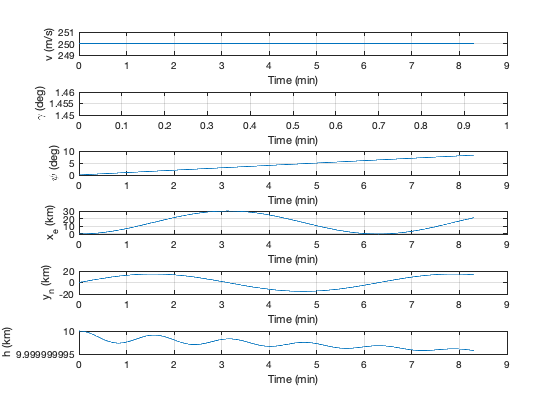
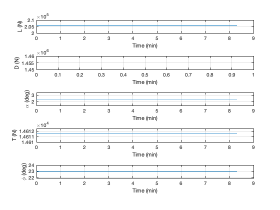

Contents
Script to simulate a Gulfstream 350 in a banked turn
See also RHSPointMassAircraft, EquilibriumControls, RungeKutta, TimeLabel, PlotSet
n = 500; dT = 1; rTD = 180/pi;
Start by finding the equilibrium controls
d = RHSPointMassAircraft; d.phi = 0.4; x = [250;0;0.02;0;0;10000]; d = EquilibriumControls( x, d ); r = x(1)^2/(d.g*tan(d.phi)); fprintf('Thrust %8.2f N\n',d.thrust); fprintf('Altitude %8.2f km\n',x(6)/1000); fprintf('Angle of attack %8.2f deg\n',d.alpha*180/pi); fprintf('Bank angle %8.2f deg\n',d.phi*180/pi); fprintf('Turn radius %8.2f km\n',r/1000);
Thrust 14611.50 N Altitude 10.00 km Angle of attack 2.41 deg Bank angle 22.92 deg Turn radius 15.08 km
Simulation
xPlot = zeros(length(x)+5,n); for k = 1:n % Get lift and drag for plotting [~,L,D] = RHSPointMassAircraft( 0, x, d ); % Plot storage xPlot(:,k) = [x;L;D;d.alpha*rTD;d.thrust;d.phi*rTD]; % Integrate x = RungeKutta( @RHSPointMassAircraft, 0, x, dT, d ); % A crash if( x(6) <= 0 ) break; end end
Plot the results
xPlot = xPlot(:,1:k);
xPlot(2,:) = xPlot(2,:)*rTD;
xPlot(4:6,:) = xPlot(4:6,:)/1000;
yL = {'v (m/s)' '\gamma (deg)' '\psi (deg)' 'x_e (km)' 'y_n (km)'...
'h (km)' 'L (N)' 'D (N)' '\alpha (deg)' 'T (N)' '\phi (deg)'};
[t,tL] = TimeLabel(dT*(0:(k-1)));
PlotSet( t, xPlot(1:6,:), 'x label', tL, 'y label', yL(1:6),...
'figure title', 'Aircraft State', 'ylim',{[249 251] [1.45 1.46],[],[],[],[]} );
PlotSet( t, xPlot(7:11,:), 'x label', tL, 'y label', yL(7:11),...
'figure title', 'Aircraft Lift, Drag and Controls', 'ylim',{[2e5 2.1e5] [1.45e6 1.46e6],[],[],[],[]} );
PlotSet( xPlot(4,:), xPlot(5,:), 'x label', yL{4}, 'y label', yL{5},...
'figure title', 'Planar Trajectory' );
  
Copyright
Copyright (c) 2019, 2022 Princeton Satellite Systems, Inc. All rights reserved.